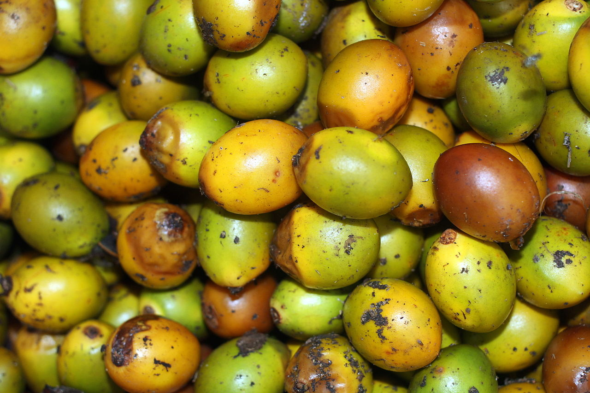
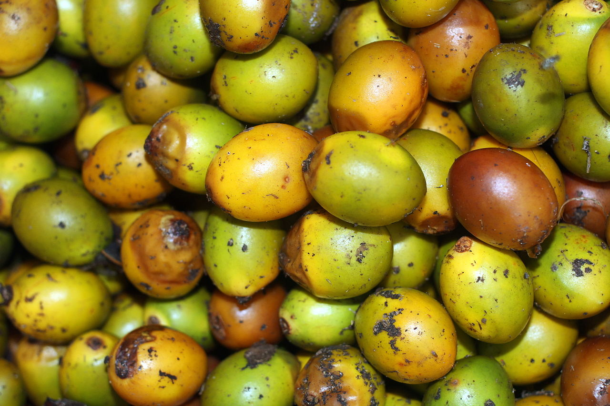
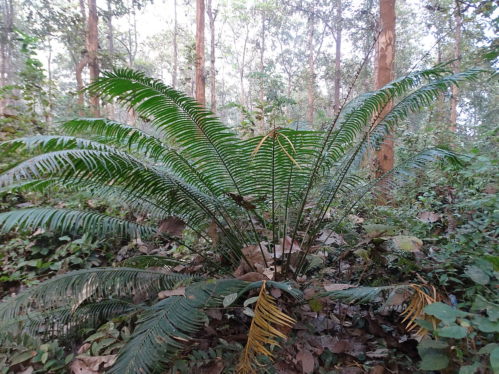

Cycas circinalis, also known as the queen sago, is a species of cycads. Queen sagos are only found in the wild in southern India and their conservation status is unfortunately endangered. The plant is also cultivated and widespread in Hawaii for its appearance. Queen sagos are gymnosperms (which means that they reproduce by an exposed seed) and can be distinguished by their cones located at the bases of their leafy branches. Their seeds are poisonous, but after soaking in water at least 5 separate times, they can be dried, crushed and used to make tortillas, tamales, soup and porridge (“Cycas circinalis,” “cycad”).
